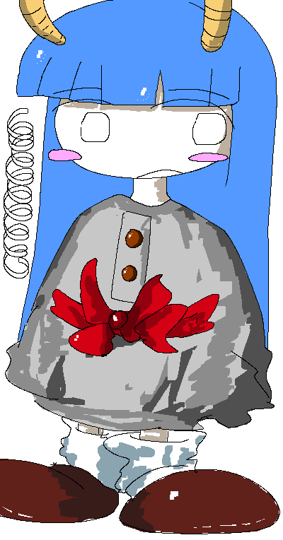

|

|

Nana
Introduced 11 February 2026
Nana's Associated Music:
Play Music"Nana's Theme: Free and Fluid"
View Gallery Page
General Information:
Nana is the deuteragonist of Colormill.
Personality:
Nana has a personality that resembles that of a peacemaker. For some, she is seen as the mediator type, as she would typically emphasize pragmatism whenever conflict occured between others. She can adapt easily in various social scenarios and is flexible when it comes to approaching unpredictable situations.
Nana is naturally gifted in various creative outlets, but hates to take pride in her abilities.
Spawn Quirk:
At will, Nana can spawn and control helical objects of various types (coil springs, specialized cables, etc.). Helical objects serve as an exemplification of her flexible nature, in terms of both personality and general way of life. She uses helical objects as a multi-purpose tool.
Occupation:
Nana is a full-time librarian and multi-instrumentalist. During inactive hours at her library, she spends a lot of time reading about classic philosophies and histories of different religions.
Relationships:
Nana considers Amalie her closest friend. Due to Amalie's distant nature, Nana will sometimes act as a social shield for her, where she serves as a protective buffer for conversations that Amalie struggles with.
[Colormill Home]
Project Launched 11 February 2026